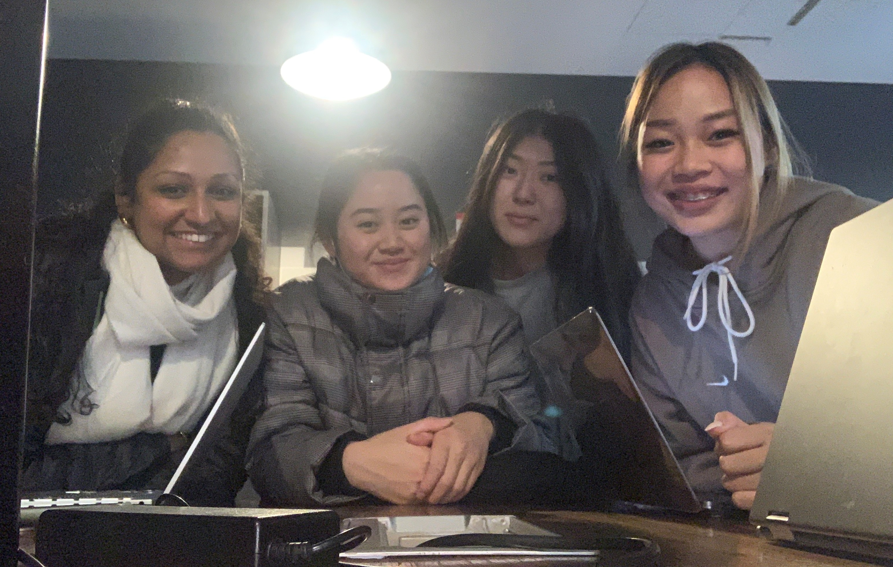
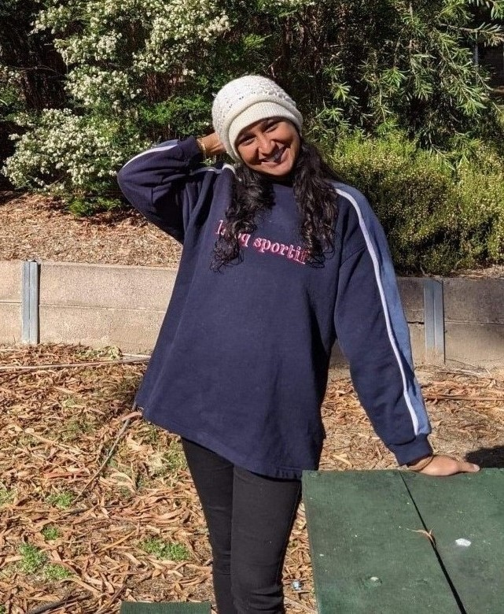
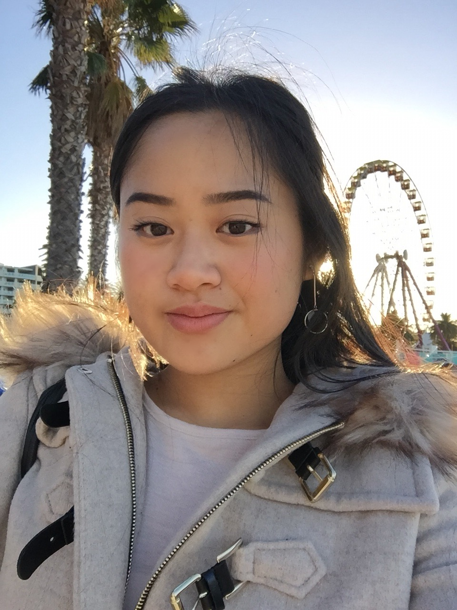
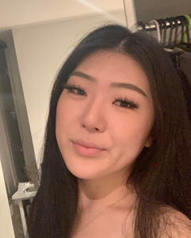
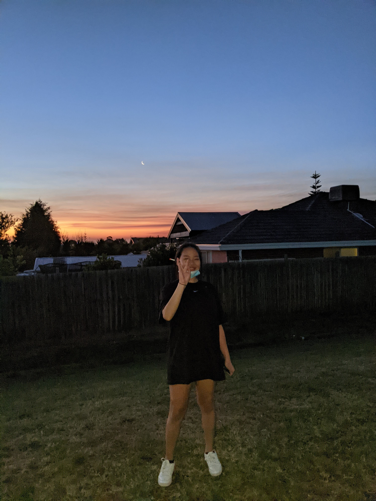

Welcome to our group website! Please select a section.

There are four members in our team, "Powerpuff Girls" - Natanya (s3488872), Martina (s3908137), Wendy (s3898700) and Thao (s3901351).
 Hi, I’m Natanya and I’m from Melbourne - I was born in Sri Lanka and migrated to Australia when I was four. My passions are travel, fashion, photography, singing, design, and social psychology. I’m also passionate about the environment, international aid; and volunteering in these areas! I have travelled over the years to around 16 or so countries, in various capacities, learning the national languages where I could. After graduating high school in 2013, I went on to study a Bachelor of Fashion Design at RMIT for two years. Realising it wasn’t for me, and not what I wanted to do career-wise, I travelled and worked on and off, before considering enrolling in an IT degree. My pursuits in various areas over the years led me to realise I enjoyed things of a practical and logical nature, and my affinity for tech also made it easier to decide on this. Being a growing field, I found IT an ideal sector to enter, and already had some knowledge of the field through my brother (an IT consultant), and my own exploration and life experiences. Currently, I’d like to explore the areas of cloud-computing and cybersecurity, but am aware this might change. I’m a member of the team: Powerpuff Girls. You can read more about me here.
 Hi I’m Martina and I am Australian Vietnamese. I like to play the keyboard, guitar and ukulele, and my go-to songs to play are either recent pop songs or ballads that I learn off of Youtube. One other thing is that I never fail to sing or hum a tune at least once a day. I started in the field of commerce fresh after high school, but I always had a small interest in the field of information technology, so I actually switched midway through my previous degree to pursue IT at RMIT. My understanding in IT is basic even though I grew up with technology all around me. The closest IT experience I have is in my everyday consumption of all the different technologies surrounding me, but I am keen to learn more about information technology in this Bachelor’s at RMIT. You can read more about me here.
 Hello, My name is Wendy Si and my student number is s3898700. I am from Shanghai, but was born and raised in Melbourne. My date of birth is the 8th of February 2003 and my background is Chinese. I graduated from Nossal High School in 2020 and am now a first year Bachelor of Information Technology at RMIT. I can speak English and Mandarin Chinese, and can understand Shanghainese. A fun fact about me is that I used to be a state level swimmer when I was around 10 years old. My hobbies are playing video games, reading manga, watching anime, going clubbing and going out with friends. My interest in Information Technology is mainly centred around the coding aspect, I am interested in creating programs and learning the languages. I like how Information Technology is very practical as well, with getting the opportunity to make things. This allows me to implement what I’ve learnt and be able to create projects and sharpen my skills. My experience in Information Technology is very minimal. I learnt enough HTML to build a website back in 2017 and completed an online course in Python 2 in 2018, however those skills are long forgotten as I haven’t retained my knowledge from that time. Our team's chosen name is the Powerpuff Girls.You can read more about me here.
 Hi, my name is Thao and I am an Australian born Vietnamese. I was born on the 3rd of September, 2002, in Melbourne. I attended high school at Koonung Secondary College located in Mont Albert North and am currently in the process of completing my Bachelor of Information Technology at the Royal Melbourne Institute of Technology. My hobbies include drawing, badminton, reading, binge watching anime and you can often find me spending my Centrelink funds on food along Swanston Street. I have little experience with IT, other than the typical functionings of Microsoft programs, therefore I was interested in this course to challenge myself and learn more regarding different aspects of Information Technology. I also decided to pursue the information technology field as it plays such a fundamental role to today’s society. I am especially interested in the User Centred Design aspect of Information Technology, as I enjoy learning about how society utilises aspects of IT, to communicate ideas and make websites that appeal to audiences. Our team's chosen name is The Powerpuff Girls and you can read more about me here.
My (Myer-Briggs’) personality type is ISFP-A- adventurer, where my personality traits are Introverted, Observant, Feeling and Prospecting. My online learning style test results suggest I am a combination of a tactile learner (45%), auditory (30%) and visual (25%) learner. In my Big Five Personality test results, I scored a 67 in agreeableness, 62 in emotional stability, 46 in conscientiousness, 33 in extroversion, 2 in intellect/imagination. These test results show as an individual I am quite free-spirited and tend to enjoy doing things my own way and that I enjoy doing a lot more hands-on tasks. In a group setting my results confirm that I am a diligent worker when I am given a task, and that I would work hard to earn appreciation. I would be a reliable teammate, who would prefer a harmonious working relationship with my fellow peers and would try to solve problems as they come. My ideal team is diligent and supportive, with a similar work ethic as myself which is to do the tasks asked in a timely manner. I also prefer short term goals over long term goals, so I would need guidance and support to keep me motivated in projects that take time.
My personality type (as measured by the Myers-Briggs test) is type INFP-T (Turbulent Mediator) where my traits are 73% Introverted, 52% Intuitive, 69% Feeling, and 60% Prospecting. My learning style is multimodal according to VARK - scoring highest in Visual and Read/Write (11 each), 7 in Kinesthetic, and 4 in Aural. My Big Five Personality Test scores were: 45 in Extroversion, 30 in Emotional Stability, 80 in Agreeableness, 26 in Conscientiousness, and 14 in Intellect/Imagination. All of these results tell me that I tend to follow my emotions, am a perfectionist, and therefore leave things until the last minute as I have an all-or-nothing style/mentality. I need teammates to set deadlines so I can stick to them and be held accountable, but I am also conscious of others’ feelings and therefore do not want to let anyone down, so this drives me to complete whatever I do/my team does, to a high standard, as I am also very detail-oriented. Coming up with an interesting project idea might be difficult for me as I do not have a very good imagination, so I would need team members who are stronger in this area.
According to the Myer-Briggs test, I am a INFP (Mediator) and I am 82% Introverted, 54% Intuitive and 63% Feeling and 65% Prospecting. Traits include Introversion, observant and idealistic. I am not one to take initiative on tasks, and will require a leader to direct me as I am not one to take on a leading role. I may also be too idealistic and not think logically, as I prioritise my feelings over logic. I am also sensitive to my surroundings and highly appreciate art and creativity. For the learning style test by educationplanner.com, I am majorly a visual learner (64%), then a tactile learner (21%) and then Auditory learner (15% ) My big 5 personality traits according to truity.com I have openness (87.5%), Conscientiousness (12.5%), Extraversion (44%), Agreeableness (71%) and Neuroticism (90%). According to the results I am an empathetic idealist, and a practical caretaker and enjoy putting other people before myself. They state that I have a highly creative and imaginative way of thinking and I often see connections through interpretation. My thinking may be disrupted by unpleasant thoughts and I may have trouble focusing. My ideal team is one that has a leader and someone who can direct and allocate me tasks that I can follow. I would like the team to be collaborative and happy to assist each other with tasks, and keep each other accountable for our contributions within the team environment.
My test outcome for the 16personalities test was ISFP. ISFP people tend to have introverted, observant, feeling and prospecting personality traits.These results may influence my behaviour in a team negatively as ISFP personalities want to do things their own way and being in a team would restrict that. By taking these into account and according to 16personalities, when forming a team I should have a balance of set goals and also freedom to express myself as well as dealing with problems one-on-one or by myself. According to educationplanner.org, I am a 50% visual learner, 45% auditory learner, and 5% tactile learner. Visual learner means that you learn by reading or seeing pictures and understand through sight. These results may impact my behaviour in a team negatively as visual learners may have difficulty with spoken instructions which are often presented in group settings through discussions and interactions.Behaviours of visual learners that could benefit a team is having a strong imagination and understanding projects as a whole. By taking these traits of visual learners into account when forming a team, I should aim to try and write down instructions I get so that I am able to review and understand them at a later date, and also contributing my ideas before the opportunity passes.The results from truity.com show that I scored high in neuroticism and low in conscientiousness. Those scoring high in neuroticism typically react to situations negatively, or think about situations in a pessimistic manner. Those with low conscientiousness scores are often more impulsive and easily distracted. Going by these results, my behaviour would impact my team negatively, as I would not stay on top of tasks and deadlines, and also give up easily when plans go astray. By taking these results into account, a way to combat these negative traits would be to actively try to overcome them by recognising when the behaviours are being exhibited and correcting them.
A new Canvas group was set up to include our two new members, Dani and Lachlan. A new GitHub repository was created, with all six members of the group invited to be collaborators. This group website was also set up to include all A3 content. Our website style and formatting is duplicated from Assignment 2, with some changes.
Our GitHub repository link: https://github.com/s3488872/Assignment-3-Group-Project
FILL The audit trail on the Git repository reflects our group’s work... FILL
The same MS Teams group used in Assignment 2 for the group Powerpuff Girls was used as our main form of communication in Assignment 3. Lachlan and Dani were added to the channel. Our meetings were all conducted via MS Teams, were recorded, and are available to watch – most conducted on the ‘Meetings’ channel. Meeting files for both Assignment 2 and Assignment 3 are available on the channel; with Assignment 3 files available in the folder of the same name. Other files are also available across the channels, as are links to external files, where applicable.
A single Google Doc was again used to collaborate, and pinned in the ‘General’ channel - all report information was uploaded, collated and edited via this document, and from this a PDF version was created for submission. A second Google Doc was created for an ‘MS Teams Information’ document, from which a PDF version was generated for submission, alongside our main report.
Join our MS Teams Channel
1. 11/05/21 Agenda Recording Actions
2. 18/05/21 Agenda Recording Actions
3. 23/05/21 Agenda Recording Actions
4. 25/05/21 Agenda Recording Actions
5. /05/21 Agenda Recording Actions
The job titles for our group’s ideal jobs were Programmer Systems Analyst (Martina), Graduate Cloud-Computing Engineer Consultant (Natanya), UX Designer(Thao), and Cyber Security Analyst (Wendy). According to the Burning Glass Data, UX designers had the highest demand from employers ranked 21 with 316 job postings, followed by System Analysts at rank 34 with 221 job postings and Security Analysts at rank 42 with 173 job postings. Cloud Engineers had the least job postings out of the four, with 65 and being ranked 134 from data given by Labour Insight Jobs.
From our required skill set, most of the IT specific skills were shown to be in high demand by employers with skills such as SQL ranked 1 with 3,570 job postings, Javascript ranked 2 with 2,946 postings, JAVA ranked 3 with 2,860 postings, Python ranked 12 with 1,150 postings and HTML5 ranked 14 with 1,005 job postings from December 24th 2017 to March 23rd 2018 according to Labour Insight Jobs. The other IT specific skills had less demand than the aforementioned with C++ ranked 22 with 692 job postings and Adobe Photoshop ranked 25 with 645 job postings.
From our general required skill set, communication skills were in the most demand with 44,367 active selections. Problem solving, writing and collaboration skills came in at the next three most important within our skill set with 16,445, 15,990, and 14,364 active selections respectively. Analytical and decision making skills were shown to be amongst the less in demand skills with under 3000 active selections in each according to data from Labour Insight Jobs. The three highest ranked It-specific skills that were not in our required skill set were Microsoft Windows ranked 4 with 2,699 postings, SAP ranked 5 with 2,189 postings and Microsoft C# ranked 6 with 1,643 postings.
Martina:
My ideal job is still unchanged, but from reading the data and aspirations of my fellow group members I am inspired by the variety of jobs that IT has. It gives me confidence that the role of a systems analyst/ or programmer that I aspire to work as is quite similar to many of the top jobs that were presented in the recent burning glass data. My particular systems analyst role holds SQL as its top requirement, which is also the most seeked IT skill from the data in March 2018. This gives me confidence that knowing SQL would definitely be transferable to many other roles, giving me flexibility within the industry. I would love to work in an environment that allows me to make a positive impact in society, so to work within the healthcare industry would let me fulfill this desire of mine.
Natanya:
My opinion of my ideal job has not changed. I am happy with the position I found representing my ideal job as it is a graduate position in cloud computing. Cloud computing is not an area featured in the Burning Glass data specifically, but I am aware it is an up-and-coming field and I believe there will be plenty of opportunity in this field in the coming years. One of the skills required for the position is the completion of a Bachelor’s degree, but there is no work experience required per se, which from the Burning Glass data is a rarity in the IT field, plus this graduate position comes with training and mentoring and a minimum of 2 years’ work experience with FDM’s clients. Communication skills are still the most important generic skills to have as can be seen from the Burning Glass data and as is evident in the main skills required in my ideal job’s position description, coming second to a degree.
Thao:
My opinion of my ideal job has not changed too significantly. I still hold a strong curiosity and interest towards UX, and have found jobs that suited my needs such as working remotely, or somewhere near my home. However, UX design requires a lot of skills and experience and requires “soft skills” such as empathy, in order to have a strong understanding towards your clients and those around you. According to the Burning Glass data, I am expected to learn a lot about Adobe and other design based programs and in order to advance within a UX designer career I will need to improve my research skills, prototyping and other fundamentals of Information Technology and design. Skills required within UX include user research, analysing data, and even coding if I want to make further advancements within the UX field. I have a lot of interest towards this because it has a mixture of both creative aspects and also STEM; which seems like an idealistic balance for me personally.
Wendy:
I still possess the same opinion about my ideal job, However throughout the progress of the course I have learnt that there is a much broader range of jobs in i.t than what I first envisioned. I still believe that a career in cyber security is still something I am interested in and there are multiple job opportunities available. Jobs in cyber security require a high understanding of operating systems and languages such as C, C++, Python, Javascript and Assembly which are skills that I have not yet acquired. According to the burning glass data, demand in cyber security is increasing every year, whilst the supply is staying the same. This would mean that a career in the cyber security field would be relatively easier to find compared to other fields. I am interested in this field as analysing situations and problem solving are something I have always enjoyed and cyber security requires quite a bit of that.
FILL
1. Please tell us about your IT work. What exactly do you do?
Emily currently works for a construction technology startup that is based in the UK. The startup aims to streamline the process from design to delivery in construction. At the moment, the construction industry is very siloed. The company wants to try to alleviate the friction between the handovers of the different disciplines, with the end goal for someone to track the developments of their buildings as well.
Her role is actually a hybrid role, where she is responsible for: user research and user experience (UX) designing. Her clients are property developers in particular, and the ecosystem of the company at large; the engineers and the suppliers. She maps out all the different touch points that a client would need, their current pain points in the whole process, and is currently designing a software where the end user can engage with their service, and are able to be onboard with every aspect of the build. The user research aspect of her current role has been a bit of a challenge as it’s not something she’s very familiar with - she conducts “contextual inquiries” (one-on-one interviews with end-users) to find out what their job is, their roles and responsibilities, and their pain points (what they struggle with).
2. Please tell us about the industry you work in.
Emily works in the industry of Construction Technology. She speaks of UX design at large being an emerging and fascinating field - there is “real optimism and enthusiasm about it”, and so it’s very accepting of people from different disciplines coming in and trying the field (including those who are making career changes outside the IT industry). At many of the conferences she partook, there was always lots of news and fascination, as it’s an exciting and open space with lots of unknowns, as people try to understand how it fits in tech. In construction, the demographic is very skewed, and there are not many females - it is difficult to get your foot in the door as a female in this industry (i.e. even for architects, design engineers).
3. What other kinds of work do you have to do?
In the startup that Emily currently works at, she wears a few hats. The team is quite small, therefore she actually takes on many other roles beyond the scope of just UX design. She “basically took on a graphic designing role as well”, where she completed ‘pitch-decks’ for investors, and created infographics that demonstrated what the startup was doing. She contributed to building the brand up to what it currently is over the course of two years, but has since given the tasks to brand ambassadors that were recently hired.
She summarises that lots of the work she did was not what she initially planned on taking on, but due to the limited resources in the start up, she continued to learn new skills for many different roles, which have provided her invaluable skills she would not have picked up otherwise.
4. Who are all the different people you interact with in your work? Please tell us about them.
Emily is actually the only UX designer in her team unfortunately, thus she takes on lots of work as a one-man team. At the moment, she finds it isolating, as she used to be located in the UK with her team, but had to come back to Melbourne due to COVID-19. In her small team, she works with some people who have over 25 years’ experience in the construction industry, which helps her understand the industry more. She works closely with the C-suite of the startup as she often fixes their presentation material; as well as her director, the digital solutions director, who is responsible for building all the product lines of the start up, which is a software program.
5. Please tell us about your interactions with other IT professionals.
Being in a start-up company, Emily works in a small tech team which consists of 3-4 other IT professionals. She has many responsibilities and works autonomously in her portfolio as a user researcher and UX designer. At times she will interact with her CTO (chief technological officer) who looks at the business overall, taking care of the portals for recruitment and overlooking what programs are being used to create and design the software they are developing. She also touches base with the engineers who build the program as she ensures that what she designs is feasible. There is also her director, who worked previously as a computational fluids dynamic engineer, who she keeps in contact with as it is her superior in her workplace.
6. What about your interactions with clients or investors?
Emily’s interactions with clients and investors have mostly been informational and for research purposes. In her user research, she has dealt with property developers, asking what they want in the software that she is helping create. For prospective investors, she has created materials, such as the pitch-decks as mentioned before. She describes that most of the work has really just been designer- based so far, but once she gets into user testing, she will start interacting with more clients to find out more about how they find the actual program.
7. What aspects of your work do you spend most time on? Could you tell us about these?
As she works in a hybrid role, she has spent most of her time on building questionnaires for interviews after conducting the user research. She then synthesises data which takes a few days, as she carries out thematic analysis which captures themes in the transcript of her interviews. User’s ‘pain points’, which are what they are struggling with, are then encoded to excel spreadsheets where Emily would follow up by creating user need statements that provide prompts on what her team needs to make for their users. She has to decide how these needs are relevant to their software through functionality, and whether it is feasible to be added into the program. Emily then builds prototypes, creating basic wireframes (from the Excel spreadsheet) forming ideas on how these interactions could take place.
8. Which aspects of your role do you find most challenging?
The most challenging aspect for Emily is prioritising what is most pressing as she is working on her own everyday from home. She struggles with figuring out her own task list as she's given so much trust and autonomy to complete her work, so also finding motivation and following deadlines, which she describes as being similar to university, is another constant struggle.
9. Can you share an example of the work you do that best captures the essence of the IT industry?
Emily explains that she creates her wireframes on Adobe XD. We witnessed the complexity in her designs as she plans the building of a desktop style software. Some of the features that we saw were how it displayed the costs of a project, and provided a section to find assemblers of the actual building design in the program that her team is working on. It is noted that what was shown to us is all a work in progress that she continuously adds on to and improves after constant workshops and meetings with engineers, to ensure the design is feasible.
10. What is it like, specifically as a female working in STEM?
For Emily, she says that STEM is not a female-dominant field, and sometimes she feels like the support from women in the corporate environment is weak. She describes it as being difficult and daunting, finding it hard to put herself out there to make connections as it takes a lot of effort. Emily also mentions that sometimes she had to put on a ‘fake ego’ to fit in, but soon realised that almost everyone was in the same position as herself, in that it’s scary for everyone. She attended a lot of conferences and realised everyone was trying to figure it out and trying to find a job, so showing your worth is hard, regardless of gender. She found comfort when she joined a lot of women in tech groups - communities such as ‘Women in Tech Jobs’ (on Facebook), and ‘Ladies in UX,’ which is based in Melbourne. She also attends lots of breakfasts with other women in the same field, so it doesn’t have to be in the corporate workplace - simply finding an environment with like-minded people where she could feel understood in the struggles in her work was enough; there are plenty of people to talk to.
11. What drove/motivated you to pursue a job in your current field?
Emily’s dad’s colleague brought up the term ‘UX’. For Emily, during her studies in her Bachelor’s, she claimed she was ‘still figuring out what she wanted to do.’ She loved IT and coding but also enjoyed design work and knew she wanted a more client-facing role. UX design was a perfect hybrid in her eyes, where ultimately, she would be able to engineer users’ behaviour by crafting an experience on the back-end; but also interact with people day-to-day. It was important for Emily to find that balance as she couldn't see herself working behind the screen without engaging with people outside of the business. She fell into UX because it seemed like a nice mix.
12. What was the journey like to get to where you are now, and what are some main lessons you came across in your career so far?
Emily deems herself as lucky, but also agrees that “being a woman, we tend to discount [our] achievements.” Her current job stemmed from working as a nanny in London, UK, for the CEO of a start-up. He offered her a place in the company, leading her to believe that things happen for a reason; she’s very grateful for it. One of the things she has struggled with most in her career, and still does occasionally, is impostor syndrome. This is very hard for her - because she is such an avid learner, she wants to be ‘across everything’; this poses a challenge though, being that she is studying as well, and trying to balance both work and study. She is continually trying to combat the negative thoughts and attempting to give herself more credit. It is passion that helps her persevere and feel fulfilled.
Despite how well our personalities worked together, and how easy it was communicating, allocating and discussing our work, it was still a challenge in my opinion. My key takeaways from this group assignment is that I definitely need to be more organised and take more initiative, instead of waiting on others to get something started. Most of our group members were able to complete individual tasks on time and be present for scheduled meetings. However there were at times bad communication which could have been prevented with more organisation from each person. It was nice to hear that everyone was definitely on board with their allocated tasks and willing to put in the effort to complete it on time, however in future, we need to be more disciplined in meeting our deadlines instead of pushing them back. We each worked within our strengths and gave each other support when needed or called for and we created an overall positive and peaceful energy between ourselves. In summary, our group could only do so well with just a positive attitude, but organisation, integrity and commitment from each individual would have pushed our group to do better.
I found this group assignment quite challenging – our personalities work well together perhaps socially and in making initial decisions etc., as evident from our personality test results, and getting started as a group went well, but follow-through was a challenge as time went on. My weakness being procrastination came into play, and held my own progress back for one of my allocated tasks in particular, whereas I found the progress of the group as a whole was held back by a perpetuation of a dynamic within the group to not hold each other accountable or speak up. In saying that, our group did get along amicably and we didn’t have any major hiccups. As it was a fairly large assignment, more even contributions would have made the experience far less stressful and the overall experience more enjoyable for working in a group, as the extension was very necessary for the completion of our assignment – it would have been better if we could have been more on-track in the third week of the assignment so we would have had more time to spend on improving the quality of our assignment, and perhaps presentation of the report. Better communication, organisation and time-management was definitely required by everyone, and probably an enthusiasm to really “collaborate” by taking initiative and delegating tasks would have assisted this.
The group was very friendly and cooperating, everyone was motivated and willing to participate. Allocating roles and tasks went very smoothly as everyone cooperated and agreed to their tasks complete. We all had similar schedules which made it easy for us to do our meetings at the same allocated times. We should have been more prompt with completing tasks, as we did not utilise the initial few weeks to complete the assignments. However, this is understandable as everyone had other assessments and out of school obligations everyone had to fulfil. It was surprising how agreeable everyone was, and nobody was conflicted with ideas, therefore everything ran smoothly when we gave our ideas and prompts regarding tasks. This is surprising because everyone thinks differently however this group seemed to conform to everything that was given or said. Groups require a lot of communication and compromise for it to be effective and you need to sacrifice a bit of time in order to make sure everyone was able to attend meetings and allocated deadlines within the group.
The dynamic of this group was great, and everybody was encouraging and diligent. The allocation of roles and tasks in the group was spread evenly amongst members so that nobody had more work than another. Weaknesses impacting my aid in the group included time management and procrastination, stunting the progression of the task. However, in the end, everybody completed their part in the assignment. Surprisingly the group shared similar ideas and did not have conflicting judgments throughout the planning phase. Communication was important in this assignment, and I am proud of everybody in our group for upholding their appointed responsibilities, attending meetings and meeting deadlines.